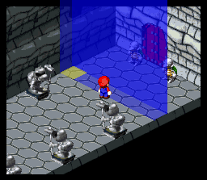
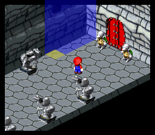
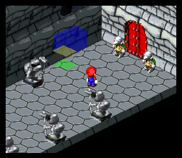
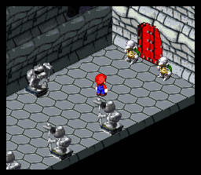

|  | 20E40C - 20E414 0B music byte (Bowser's Castle) C2 09 pointer to area lighting entrance event 09C2 AND $0FFF = 09C2 09C2 x 2 = 1384, 1384 - 0C00 = 0784 @ $1F0784 is D100 C1 89 pointer to Terrapin guards event (byte 2, bit 07 - +1 unit span length) 89C1 AND $0FFF = 09C1 09C1 x 2 = 1382, 1382 - 0C00 = 0782 @ $1F0782 is D0A4 8E 46 X,Y planar coordinates E0 upper bits / 2: height (0-7) lower bits: elevation 87 upper bits: diagonal position (80 = up-left/down-right) lower bits: span width/length |
|
The blue prism is the event field, which engages in the code indicated by the event field map. The yellow point is the position of the field by the X,Y coordinates: 8E,46. The field spans 7 units from the coordinate, as set by the lower bits in 87 (although this picture is probably not graphically accurate). | The default field position spans at an up-right diagonal from the coordinate, as seen here. This would be the field's position if 87 was 07; bit 7 of this byte turns the span diagonal down-right, as seen in the original field. |
| 
Here the field's span width is only 2, the height is only 1, and the Z coordinate (elevation) is 1 (the green point is the original ground zero coordinate). The last two bytes would be 21 and 01. If C1 89 was C1 09, the last byte read would be E0, not 87. Bit 7 of 89 commands the code to store a byte setting a diagonal position and span length, so an extra byte is read. If the span length is only 1 (a single square coordinate) then the "diagonal position" is redundant and thus one less byte is read. A field with a width of one can still be set with the diagonal/width byte, but it is redundant and wastes byte space. | |
EVENT CODE STRINGSEvent code strings very often call the SA-1 to handle heavy graphic sequences. SA-1 is mainly associated with graphics and animation. For the CPU to execute all of this code single-handedly would be far too cumbersome, and result in drastic slowdown.In event usage, it is concerned with object actions/interactions and other graphic modifications. Here is the event string for encoutering the two Terrapin guards in Bowser's Keep, Area 2. Code in blue is executed by the ordinary CPU. The code in red is executed by the SA-1 chip. This is how the code is actually executed as observed in the game, so that it can be illustrated vividly how a string of code executes different actions in an event. In a hex editor is in a very different order. | |||
1. D8 18 FF D0 2. A0 18 3. 30 4. 14 20 A. 08 40 02 B. F0 1F E. 08 48 00 F. F0 0F I. 10 81 J. 08 40 00 K. 63 18 O. 08 48 00 P. F0 0F T. 10 80 U. FD 9E 65 V. 08 10 04 W. F0 3F | 5. 16 1D C. 08 40 02 D. F0 1F G. 08 48 00 H. F0 0F L. 10 81 M. 08 40 00 N. 63 18 Q. 08 48 00 R. F0 0F X. 10 80 Y. 08 10 04 Z. F0 3F |
6. F0 5F 7. 16 FE 8. 4A 01 00 07 9. DC 00 F9 D0 10.FC 11.14 F9 12.16 F9 13.31 14.71 15.FE |
check memory bit: if set, jump to $1FD0FF (where the function FE is: in other words, cancel the event) ---the following code is executed only if the memory bits were NOT set--- set memory bit (so the event only happens once, when it comes back to check) hold Mario, so he is immobile during code (even though he'll be immobile anyways, this just secures it) these set the two objects in the area to be modified, which are objects 1 and 3 (2 Terrapin guards) set object sequence - this is the Terrapin "alert" or "surprised" animation frame duration - sets the number of frames to wait while playing animation sequence set object frame - shows the very first frame of object (Terrapin standing still) with no sequence playback frame duration - sets the number of frames to wait while showing idle Terrapin set sequence speed - this increases the "walking" animation speed by x2 set object sequence - Terrapin start walking shift object down-left 24 pixels - the Terrapin move toward Mario set object frame - shows the very first frame of object (Terrapin standing still) with no sequence playback frame duration - sets the number of frames to wait while showing idle Terrapin set sequence speed - this changes the speed back to normal play sound - Terrapin attack (this only needs to be played once, so only one Terrapin needs to use it) set object sequence - Terrapin swings his arm and attacks (only plays once) frame duration - let sequence(s) play for several frames set object code end - this means that any following code must wait until object 3 finishes its code engage in battle - simple enough check memory bits after battle - if bits clear, jump to $1FD0F9 (in other words, if the battle was won) ---the following code is executed only if the memory bits were set--- reset game ---the following code is executed only if the memory bits were NOT set--- removes object 1 completely removes object 3 completely Mario is now mobile again (even though once FE is executed he'll be able to move; just more security) screen fades in from black to normal END |